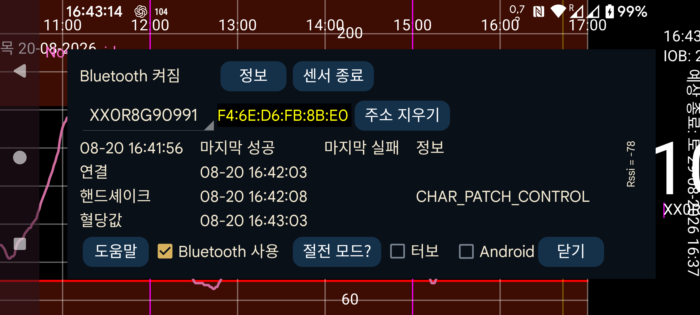

스피너에는 센서 이름이 표시됩니다. Juggluco가 동시에 둘 이상의 센서를 사용하고 있다면 정보를 표시할 센서를 선택할 수 있습니다.
절전 모드를 누르면 Juggluco의 동작을 방해할 수 있는 배터리 최적화를 끄는 방법을 안내하는 화면으로 이동합니다.
Bluetooth 기록: Libre 2에서 기록 값은 15분 간격의 과거 측정값입니다. 이전에는 스캔할 때만 이 값들을 받을 수 있었습니다. 이 옵션을 켜면 기록 값도 Bluetooth를 통해 받습니다. 이와 함께 다른 동작도 달라집니다. Juggluco는 스트림 값의 평균 대신 기록 값을 LibreView로 보냅니다. 단점은 더 느리다는 것입니다. Wear OS 워치에서는 이것이 문제가 될 수 있습니다. 이 옵션은 Libre 3 및 미국/캐나다/호주/한국용 Libre 2 센서에는 영향을 주지 않습니다. 이 센서들은 항상 Bluetooth로 기록 값을 받습니다.
버그: Libre 3를 사용하는 Wear OS에서만 표시됩니다. Samsung이 이 버그를 수정할 때까지 Samsung Galaxy Watch 5 이상에서는 이 옵션을 설정해야 합니다. 이 옵션을 사용하지 않으면 혈당값을 1분 간격이 아니라 2분 간격으로 받게 됩니다. Samsung Galaxy Watch 5부터 Ultra까지는 Libre 2 값도 항상 2분 간격으로 받습니다.
⏰: Dexcom G7 및 ONE+ 센서에 정확한 시점에 연결할 수 있도록 Juggluco가 알람 시계 기능을 사용하게 합니다. 이 기능을 사용하지 않으면 기기를 사용하지 않아 깊은 절전 상태에 있을 때 센서에 다시 연결하기 위해 깨어나지 못하는 경우가 있어 혈당값을 즉시 받지 못할 수 있습니다. (제가 사용하는 Wear OS 워치에서는 한밤중에 이런 문제가 있었습니다. 아마 거의 움직이지 않았기 때문인 것 같습니다. 나중에 백필이 이루어지고 깨어나는 과정도 느려서 워치와 휴대전화 화면에서는 알아차리지 못했고 로그 파일에서만 확인했습니다. 제 휴대전화에는 이 설정이 필요하지 않으며, 오히려 켜면 성능이 나빠지는 것 같습니다.)
권한: Android 12 이전에는 Bluetooth 기기를 검색하기 위해 위치 권한이 필요했습니다. Android 12 이상에는 Bluetooth 기기와 통신할 때 필요한 주변 기기 권한이 있습니다.
기기 주소를 알고 있는 경우 센서 식별자 뒤에 표시됩니다. 빨간색은 미국형과 같은 센서임을 뜻합니다.
주소 지우기: Juggluco가 현재 기기 주소를 잊고 기기 주소를 다시 검색하게 합니다. 일부 센서에서는 연결하기 위해 이 과정이 필요하며 그런 경우 Juggluco가 자동으로 수행합니다. 다른 상황에서도 필요할 수 있으므로 이 버튼을 사용하면 Juggluco에 수동으로 다시 검색하도록 지시할 수 있습니다.
센서 종료: 이 센서에 Bluetooth로 연결하는 것을 중지합니다. 나중에 이 센서에서 다시 스트림 혈당값을 받고 싶다면 센서를 다시 스캔하거나 센서 정보에서 “활성화”를 누르면 됩니다.
페어링 해제: Linx/Lumiflex/Aidex X 센서는 페어링된 휴대전화 또는 워치를 기억하고 다른 기기와의 연결을 거부합니다. “페어링 해제”를 누르면 센서로 명령을 보내며, 성공하면 다른 휴대전화나 워치도 다시 센서에 연결할 수 있습니다. 왼쪽 메뉴→워치→Wear OS 설정→“센서 직접 …”을 사용하여 센서 연결을 휴대전화와 워치 사이에서 넘길 때는 페어링 해제도 자동으로 이루어지므로 “페어링 해제”를 따로 사용하지 마십시오.
데이터 지우기: Linx/Lumiflex/Aidex X 센서에 연결할 때만 표시되는 버튼입니다. 이 버튼을 누르면 센서의 모든 혈당값을 제거하고 센서를 새 센서처럼 다시 시작합니다. 이 방법으로 센서를 15일보다 오래 사용할 수 있습니다. 제가 시험했을 때 센서 종료일 이후에 받은 값은 완전히 쓸모가 없었으며 동시에 사용한 Libre 3 센서 값의 약 절반 정도밖에 되지 않았습니다. 몇 주 뒤 두 번째로 지우면 혈당값이 다시 이전보다 훨씬 나빠졌습니다(제 경우에는 매우 낮게 나왔습니다). 문제는 센서를 오래 사용하는 것 자체라기보다 지우기 작업인 것 같습니다.
지우기 과정에서는 Bluetooth 기기를 여러 번 검색합니다. Android는 일정 시간 안에 앱이 기기를 검색할 수 있는 횟수를 제한합니다. 제한을 넘으면 Android가 검색 요청을 그냥 버립니다. 이 횟수를 초기화하려면 Bluetooth를 껐다가 다시 켜야 합니다.
재설정: Sibionics 2 전용입니다. 송신기에서 센서를 교체할 때 이 버튼을 눌러야 합니다. Juggluco가 이전 센서에 연결된 상태이거나 새 센서에 연결된 상태에서 누를 수 있습니다. 다른 앱에서 이미 송신기를 재설정했다면 누르면 안 됩니다.
터보: 센서 연결을 위해 더 적극적으로 시도하여 연결 오류를 줄이려는 옵션입니다. 배터리를 더 사용할 수 있습니다. 제가 시험한 기기에서는 Watch4와 FreeStyle Libre 2 센서를 함께 사용할 때 필요한 것으로 보였지만 FreeStyle Libre 3 센서나 스마트폰에서는 필요하지 않았습니다.
Android: Juggluco 대신 Android가 센서와 연결하도록 합니다. 사용하지 마십시오! 대부분의 경우 연결이 만들어지기까지 더 오래 걸립니다. 이 옵션은 Android 13의 한 버그를 우회하기 위해 추가되었지만 그 버그는 이후 수정되었습니다. 이 센서 화면에 최근 시간이 전혀 표시되지 않을 때만 켜야 합니다. 즉 연결 오류나 센서 오류도 표시되지 않고 값도 수신되지 않으며, Bluetooth를 껐다 켜면 다시 동작하는 상태를 말합니다. 유럽형 Libre 2 센서를 같은 휴대전화의 두 앱에 동시에 연결하는 경우(이 변형에서만 가능)에도 이런 상태가 생길 수 있습니다.
정보: 센서의 시작 및 종료 시간과 마지막 스캔 및 스트림 시간을 표시합니다.
Bluetooth Low Energy를 통해 FreeStyle Libre 2 센서에 연결하려면 Bluetooth가 켜져 있어야 합니다. 이 앱으로 센서를 성공적으로 스캔하기 전에는 아무 일도 일어나지 않습니다. 센서는 FreeStyle 리더나 스마트폰의 다른 앱에 연결되어 있어서는 안 됩니다. Abbott의 LibreLink 앱은 제거하거나 사용 중지하거나 강제 종료해야 합니다. FreeStyle Reader로 센서를 시작했고 리더를 끌 수 없다면 리더를 패러데이 케이지에 넣어 센서와 통신하지 못하게 할 수 있습니다.
Bluetooth 사용은 켜져 있어야 합니다.
위 조건을 모두 만족해도 앱이 센서에서 혈당값을 받기까지 오래 걸릴 수 있습니다. 보통은 1분 정도지만 때로는 훨씬 더 오래 걸립니다. 가장 문제가 많이 생기는 부분은 연결 단계입니다. 가장 흔한 것은 status=133 오류이며, 이는 onConnectionStateChange(BluetoothGatt bluetoothGatt, int status, int newState)의 status 인수입니다. 이 상태는 Bluetooth 기기를 찾을 수 없음을 뜻합니다. 거의 항상 기기가 발견될 때까지 시간이 조금 더 필요한 것뿐입니다. 센서가 다른 기기에 연결되어 있거나, 일시적으로 제대로 동작하지 않거나, 다른 기기가 간섭하거나, Android의 Bluetooth가 제대로 동작하지 않을 수도 있습니다. Bluetooth를 껐다 켜거나 휴대전화를 재부팅하거나 다른 기기의 Bluetooth 연결을 끄면 도움이 되는 경우가 있습니다. 센서를 다시 스캔하면 해결되는 문제도 있습니다. 중간에 물(신체의 수분 포함)이 있으면 문제가 될 수 있으므로 Wear OS 워치를 센서와 반대쪽 팔에 착용하면 팔의 위치에 따라 몸이 워치와 센서 사이를 가로막아 연결 문제가 생길 수 있습니다.
Accu-Chek SmartGuide 사용자 한 명은 Bluetooth 검색으로 센서를 찾지 못했을 때 Android 설정의 연결된 기기에서 센서를 선택하고 등록 해제를 눌러 해결했다고 보고했습니다.
다른 휴대전화에서 Juggluco로 Libre 센서를 스캔하면(Bluetooth 사용이 켜진 상태) 이 휴대전화의 연결을 빼앗아 갑니다. 연결을 되찾으려면 중간에 다시 스캔해야 할 수도 있으며 시간이 걸릴 수 있습니다.